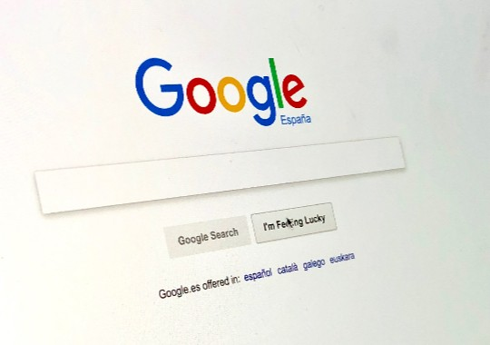

Los costes de adquisición de tráfico suben para Google.
Pregúntale a Siri algo que no sepa y lo más probable es que sugiera buscarlo en la web. ¿Dónde? Buena pregunta. Hasta hace sólo un mes la respuesta habría sido Bing, el buscador de Microsoft, con independencia del buscador que el usuario tenga seleccionado por defecto en Safari (el navegador por defecto en los dispositivos de Apple).
Hoy, en cambio, Siri sugiere buscarlo en Google y no es por capricho. El acuerdo con Microsoft había llegado a su fin y Google estaba dispuesta a pagar más por ser el buscador predeterminado del asistente virtual de Apple.
Google tiene que sumar esa cifra a lo que ya paga por ser el buscador predeterminado en Safari y la cuenta final no sale barata. Según los analistas la empresa paga entre 3.000 y 4.000 millones de dólares al año a Apple por el privilegio de ser omnipresente tanto en Mac como en iOS.
Apple no es la única compañía a la que tiene que convencer. Google también paga a otras por asegurarse un puesto prioritario en sus productos y la cantidad que debe invertir para lograrlo es cada vez mayor.
Según Bloomberg Businessweek, de hecho, la cifra -que Google presenta en sus resultados financieros como parte del "coste de adquisición de tráfico"- se ha triplicado a lo largo de los últimos cinco años y ahora mismo supera los 7.200 millones de dólares.